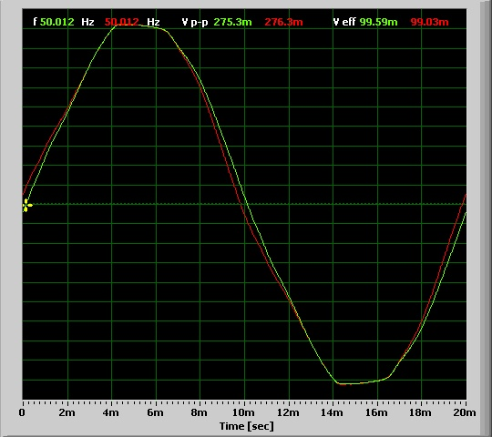

I’ve been gradually refining my phase-locked loop code for emonTx and I think it’s probably as good as it’s going to get now so I’ve decided to make it into a library.
As an example included with this library is a short sketch which will measure the phase difference between current and voltage on an emonTx, or any other board with access to both signals.
Here’s an example of it in action...
This was taken using a Mascot a/c adaptor and 9kW of floor heating as the load. Initially no phase correction is applied and the power factor is 0.9978. The phase difference is then measured and shows that current leads voltage by 207µs, or 3.74 degrees (note that the cosine of 3.74 is 0.99787 so this agrees very well with the measurement). This correction is then applied and the power factor goes to 0.9999, which is probably as close to 1 as you are going to get in a real-word situation.
To prove the software works correctly when the inputs are perfect, here’s another example. This time the voltage is sourced from a signal generator and the current is derived from an RC network which gives a fixed delay of 193µs as shown on this oscilloscope trace (my scope can only resolve 2µs at this timebase)...
Here you can see that the sketch correctly measures this current lag and the power factor becomes unity when the phase adjustment is applied...
The PHASECAL values are calculated from the current lead/lag using the values given in this building block article for emonLib timing.
Here's the library...
http://openenergymonitor.org/emon/sites/default/files/PLL50Hz.zip
Re: PHASECAL calibration tool
This nicely shows the benefit of sampling at a fixed rate, such as 50 times per mains cycle. By measuring the phase difference between the two waveforms, the correct value of phaseCal can then be calculated directly rather than by looking for the best result from a range of settings.
My equivalent tool requires a bit more effort from the user but works with any rate of sampling, including free-running. The ADC operates at its fastest when in free-running mode, but it is possible that the sampling intervals may not be quite as even as when using a fixed rate timer.
Re: PHASECAL calibration tool
Nice piece of work/code MartinR
Re: PHASECAL calibration tool
thanks stuart - it took far too many hours to get to this point!
Robin - the theory behind PHASECAL is only really valid for a fixed sampling rate. You are calculating the voltage by interpolating at a constant percentage between 2 samples. If the interval between samples changes then the interpolated value will not be correct. The effect may be small but it is still an avoidable error. Have you measured any increase in accuracy by sampling above 50 times per cycle?
Edited to say: I should probably also point out that a value for PHASECAL derived from your sketch won't be valid for emonTx if sampling rate and time between voltage and current samples is not the same as for EmonLib. The phase delay I measure is an absolute value so independent of the sampling rate. As I mentioned, the PHASECAL value is based on EmonLib timing in the Building Blocks article.
Re: PHASECAL calibration tool
It might be worth pointing out that you shouldn't get too carried away with accuracy - the phase shift of both transformers - current and voltage - changes with the operating point (the current and the system voltage) by a few degrees - see the test reports for actual measured values. So unless you want to adjust PHASECAL with a two-dimensional lookup table, it's going to be wrong. The trick will be to run the calibration and set the value so that it's nearly right most of the time.
Or you could use rather more expensive transducers than the cheap and cheerful recommended ones.
Nevertheless, congratulations, Martin.
Re: PHASECAL calibration tool
Thanks Robert and a good point regarding the variation with operating point.
One thing I did notice, although I didn't fully investigate it, is that wrapping multiple turns around the CT appeared to cause a significant phase shift that wasn't present when the same current passed through a single wire. I assumed this was due to the inductance of the multiple turns. If this is indeed a real effect then it would distort your phase shift plot for the CT (unless of course you accounted for it?)
Re: PHASECAL calibration tool
Robin - the theory behind PHASECAL is only really valid for a fixed sampling rate. You are calculating the voltage by interpolating at a constant percentage between 2 samples. If the interval between samples changes then the interpolated value will not be correct. The effect may be small but it is still an avoidable error. Have you measured any increase in accuracy by sampling above 50 times per cycle?
Yes, Martin, I'd agree with all those points. When you first pointed out that my Mk2 code was suspect, your constructive criticism was entirely valid (even if it took me a while to accept it!). Since then, I've moved on to using interrupts with either a fixed rate timer or free-running. In both cases, I would hope that the sampling rate is pretty constant, but don't have any specialised equipment with which to check this. My "Tallymode" results never differ by much between consecutive runs. This displays the average number of sample pairs per mains cycle.
Although you say that "the PHASECAL value is based on EmonLib timing in the Building Blocks article", your logic seems able to pinpoint the optimal phaseCal value with some accuracy, at its first attempt. Which is impressive.
When just diverting surplus power, this value seems to make very little difference. It would be interesting to hear from anyone for whom the correct value of phaseCal is important (but preferably not on this thread).
Re: PHASECAL calibration tool
You're right of course Robin, small errors in PHASECAL make little difference due to the cosine relationship between phase shift and power. I'm sure your latest sketches are more than accurate enough for the job they are required to do.
I ended up with this sketch after I tried to determine phase shift by measuring the time between voltage and current zero crossings and quickly discovered that it doesn't work. The distortion in the voltage waveform as it passes through 0 can be greater than the phase shift you are trying to measure!
In the end I took advantage of the fact that with the PLL all the samples are at a known angle, so I directly calculated the phase shift that gives the best fit (in the mathematical meaning of the term) to a pure sine wave aligned to the PLL. It surprised me how well it works.
Re: PHASECAL calibration tool
Here's a quick measurement (i.e. one set of readings, no averaging) of one c.t. with a primary winding of 6 turns (5 A per turn max), over a 100:1 range; and then 3 turns. The burden was 18 Ohms. It does look to me as if the basic shape of the curve is unchanged, and there is indeed a small difference of around ½° between the curves. It is however overshadowed by the variation due to the magnetic properties as the flux in the core changes due to current.
I measured the c.t phase shift directly, i.e. with a 'scope in X-Y mode and plotted voltage across the burden against primary current (voltage measured across a series resistor) .
As inductance is proportional to n2 and n2 has changed by a factor of 4, it would appear that the primary inductance is not having a major effect on the phase shift.
Re: PHASECAL calibration tool
Interesting. Half a degree does seem quite significant for a change from 3 to 6 turns. I tried 30 turns when I was trying to create a resistive load to test my sketch and the current trace disappeared off my scope so I decided that was a bad idea. I'll repeat the test when I get chance and measure the actual shift.
I'm starting to have trouble with this whole concept of phase shift. I was just looking at the diagrams in the Mascot report and the idea that there is a 5.7 degree phase shift in this one troubles me....

Isn't this just a distortion? If it truly was a phase shift then the waveform would be shifted at the peaks too. Assuming the current followed the green line then shifting the voltage by 5.7 degrees would probably reduce the power factor as the peaks would not then align.
Re: PHASECAL calibration tool
The real question is, can the distorted waveform actually be improved by applying phasecal. If you can get a PF of 1.000 then it appears the phasecal correction is doing its job nicely. But anything less than this might suggest that it isn't.
For comparison, here's a couple of sinusoids with a small phase shift between them.
Re: PHASECAL calibration tool
Isn't this just a distortion?
It's both. Either the middle part is shifted to the left and the peaks stay in place, or the whole wave has a shift to the left and the peaks lean to the right! Thinking in terms of the B-H curve, I favour the latter.
Re: PHASECAL calibration tool
If you compare the two diagrams at 185.5V and 253V the peaks don't change, it's just the middle part that moves. Doesn't this suggest that the peaks don't lean to the right?
It looks to my untrained eye more like the result of increased harmonic distortion than phase shift.
I assume the measure of phase shift is how far the fundamental 50Hz component has shifted. With the data you have it would be possible to perform Fourier analysis and find out exactly what the waveform consists of - whether it's worth it though is a different matter!
Re: PHASECAL calibration tool
When calculating real power, this calls into question whether it's best to leave the peaks in alignment, and suffer a negative energy content near the z/c points; or to align the z/c points and suffer some loss of calculated energy near the peaks.
Seems to me that it's probably best to leave the peaks aligned and ignore any distortion near the z/c points. A good quality CT, preferably used within its intended operating range, should minimise this unwanted effect.
In the absence of a scope, my phasecalChecker (or Martin's) will identify the value that gives a Power Factor of closest to unity. When calculating real power, which is what the meter measures, this is probably the optimal setting.
Re: PHASECAL calibration tool
There's just one problem here: I don't know what phase means when the waves are not sinusoids. If you're talking voltage and current waves, what I can understand is the phase relationship between the two fundamentals, between harmonics of the same order, and between the fundamental and its own harmonics. But between the two complex waves, no.
Generally, Martin, you're right: people generally mean the 50 Hz fundamental when you're talking about power components.
Without distortion-free transducers, it all adds up to measurement errors and the best you can do is adjust everything to give the smallest overall error. So I'd suggest you need to calibrate the voltage to give the same answer as a true rms meter, likewise the current and then you adjust the "phase" - actually the timing - relationship to show unity power factor on a resistive load. And that's exactly the recommended calibration procedure if you can measure the current. If you can't, then you infer current from real power and need to iterate around the loop a few times because there is a degree of interaction.
If you wish to do the Fourier analysis, here's the data for the Ideal voltage adapter at 240 V. Col 1 is time, Col 2 is mains input and Col 3 is the adapter output.
Re: PHASECAL calibration tool
If you wish to do the Fourier analysis, here's the data for the Ideal voltage adapter at 240 V. Col 1 is time, Col 2 is mains input and Col 3 is the adapter output.
Just tried this but there isn't really enough samples for the low frequency involved. Each step in the FFT output is 44.1kHz/1024=43Hz so we'd need a lot more samples. Here's the output for the first 10 steps..
Re: PHASECAL calibration tool
Hi guys!
I don't want to make a stupid question, but will PHASECAL be the parameter that is specified in the call to the function:
emon1.voltage(2, 234.26, 1.7); // Voltage: input pin, calibration, phase_shift ?
I read a lot of posts about the phase shift, and you always refer in the forums to PHASECAL variable... so I couldn't find any place where you refer to both variables being the same!
Thanks a lot for all your work :)
Re: PHASECAL calibration tool
Yes, that function is indeed setting the value of phaseCal to 1.7. What this means is that that every voltage sample will be extrapolated from the previous two to a point that is seven tenths of the way to the next one (the sample that has not yet been taken).
Changing the order of the V and I measurements in calcVI() would most likely bring the optimal value of phaseCal back into the 0 - 1 range where the appropriate value can be interpolated rather than extrapolated..
For "real power" calculations, the value of phasecal (or the phase-shift between V and I waveforms), seems to make virtually no difference to the result.
PHASECAL is not a #define, so I now prefer to write it with lowerCaseLetters :)
Re: PHASECAL calibration tool
Nice! Thanks for the clarification.
My arduino is power rocking now :)